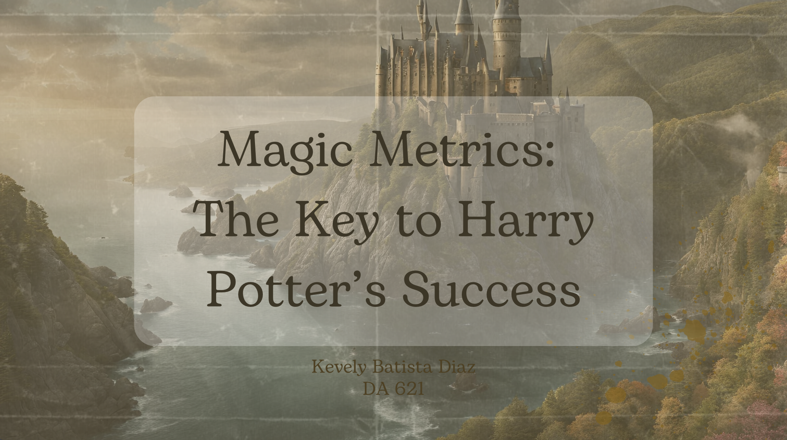
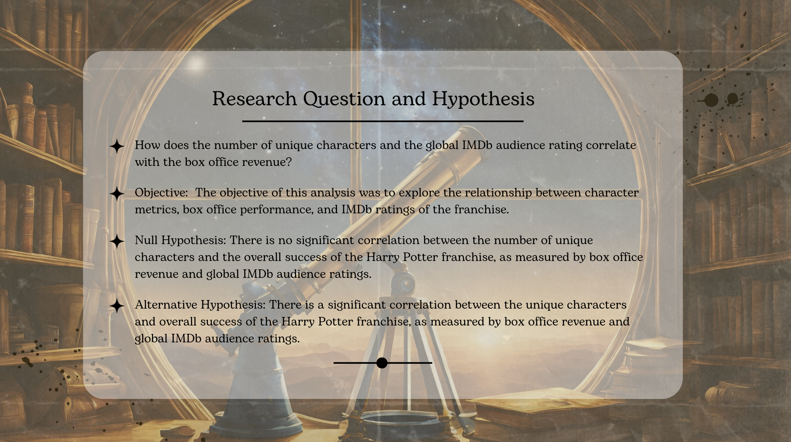
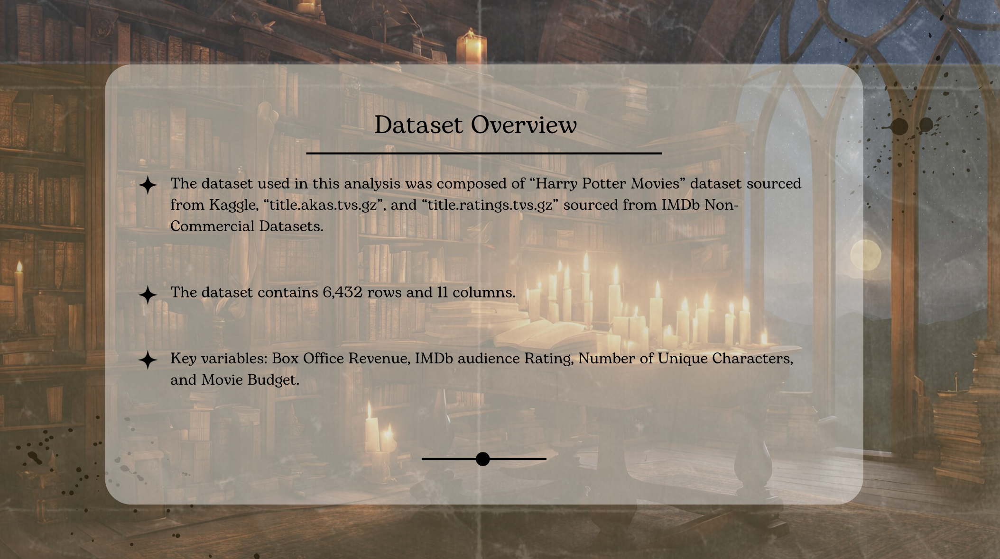
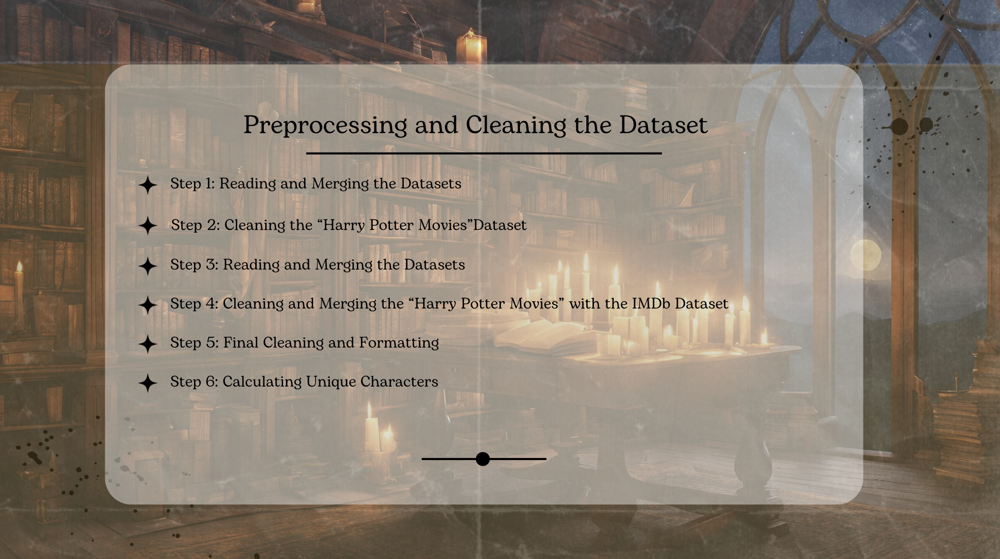
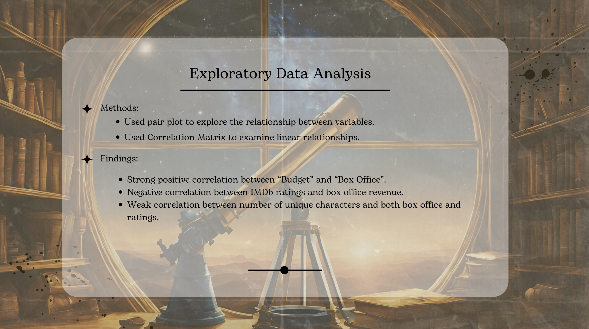
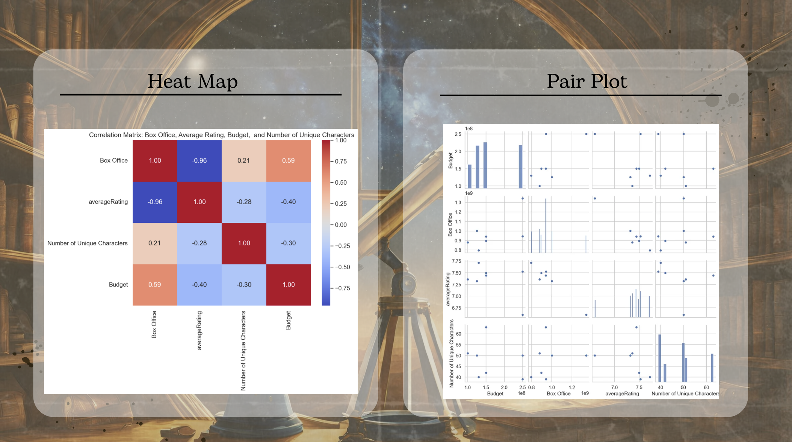
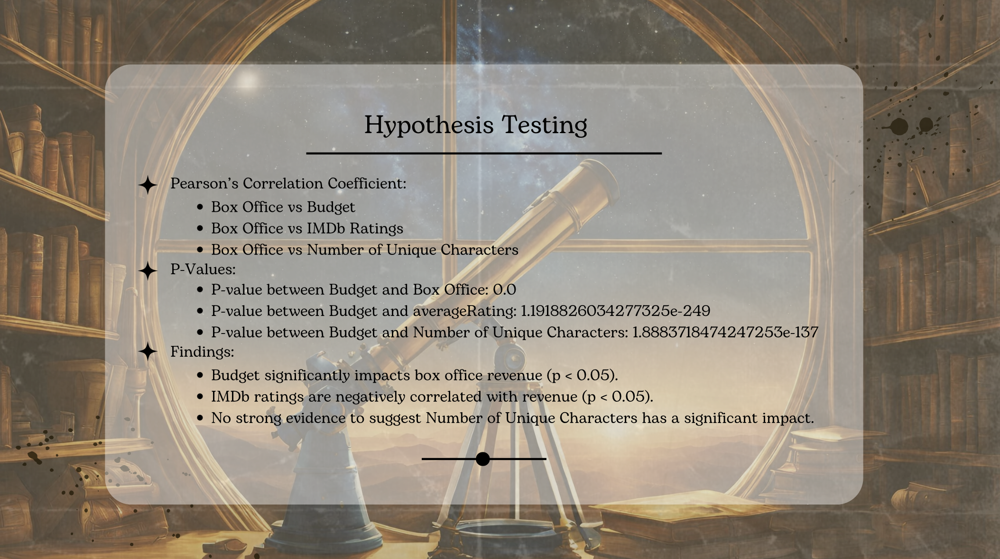
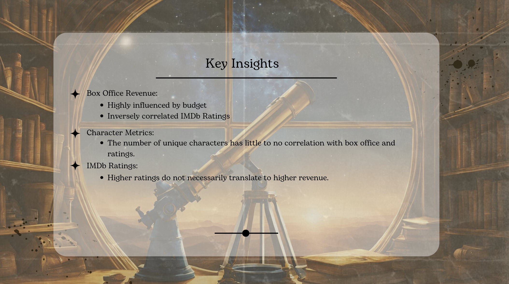
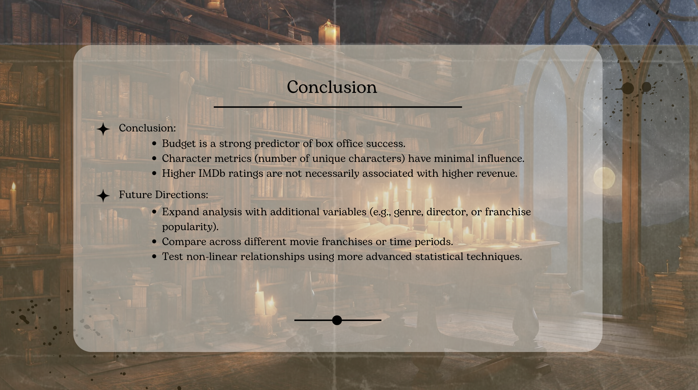

Magic Metrics: The Key to Harry Potter's Success
Exploratory Data Analysis | Hypothesis Testing | Box Office & Financial Modeling
Project Overview
An exploratory data analysis and hypothesis testing project investigating the drivers of financial and critical success across the eight-film Harry Potter franchise. The study integrates multiple datasets to analyze the mathematical relationships between production budgets, character density, audience ratings, and global box office returns.
Key Methodologies & Tools
- Data Aggregation & Cleaning: Merged disparate movie datasets, transformed financial values, and normalized ratings features using Pandas and NumPy.
- Hypothesis Testing & Statistical Analysis: Conducted statistical evaluations to measure correlations between production expenditure, runtime length, character appearance metrics, and ROI.
- Data Visualization: Created statistical distributions, scatter plots, and trends using Matplotlib to highlight performance variance across the series release timeline.
Interactive Presentation Deck
Use the arrows below to flip through the project slide deck:










Project Deliverables
Access the full analytical report detailing the methodology, data transformations, statistical tests, and visual breakdowns:
View Full Analytical Report (PDF) →